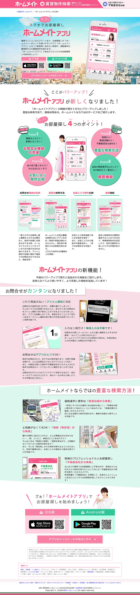

自社アプリLP
自社提供アプリのLPです。アプリ制作チームからの依頼で作成しました。 ディレクターと二人で依頼側との折衝からWF、デザイン、コーディングまでを行いました。 ただ、LPとして作りましたが、その後のCV等はとっておらず、サイト内でのアプリ紹介ページにとどまっています。 アプリのDL数を上げるためにも、どこを主題に置くかをもっと詰めればよかったと思います。
- 役割：ディレクション/デザイン/コーディング/ライティング
- 期間：2週間
- 「ホームメイトアプリ」のご紹介